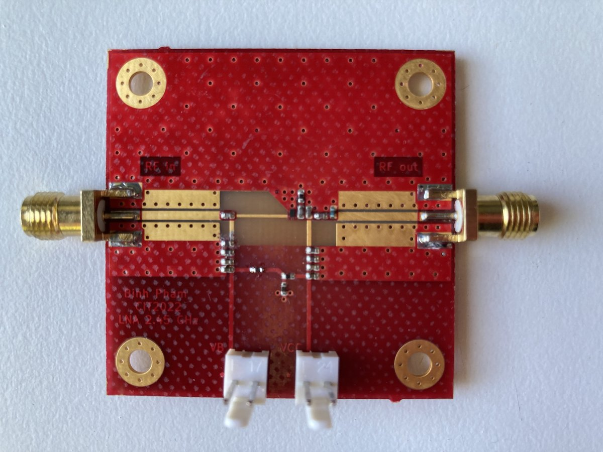
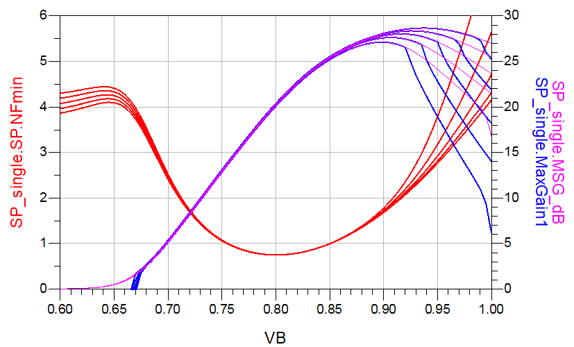
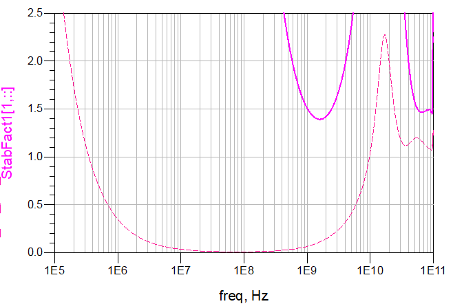
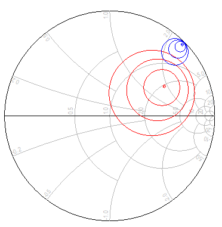
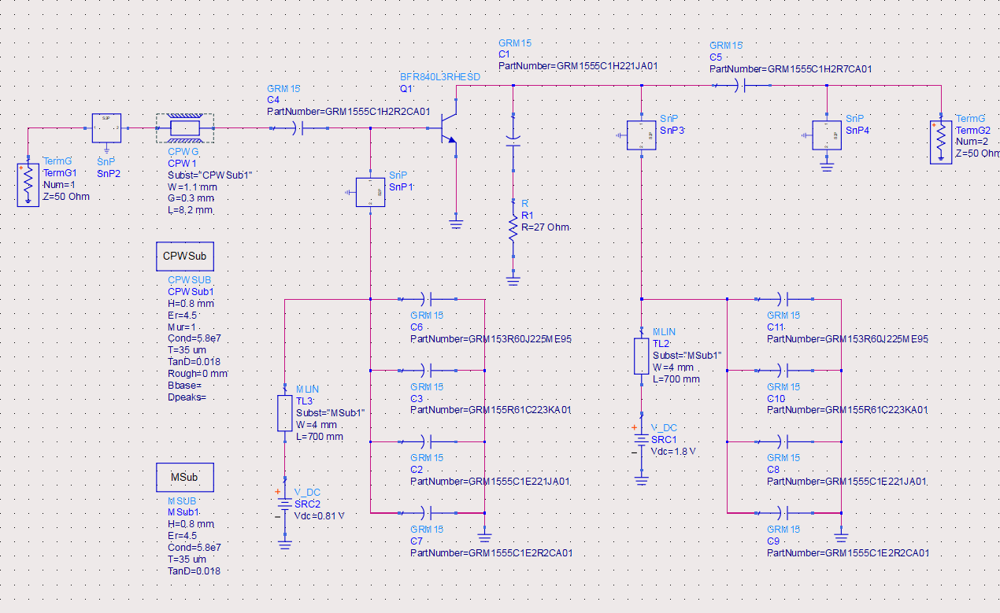
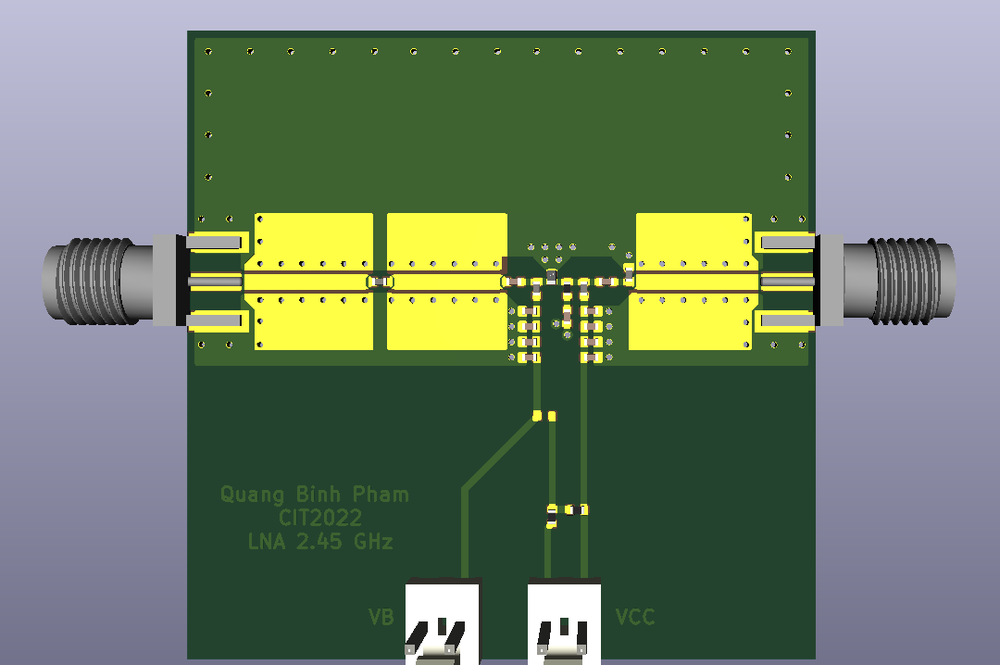
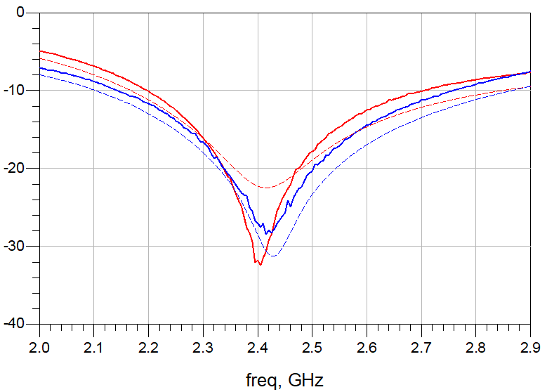
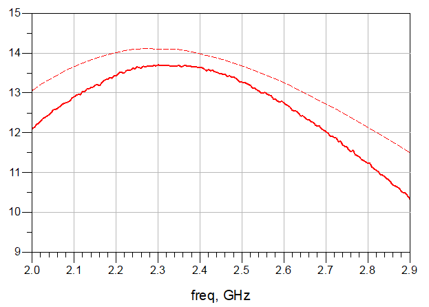
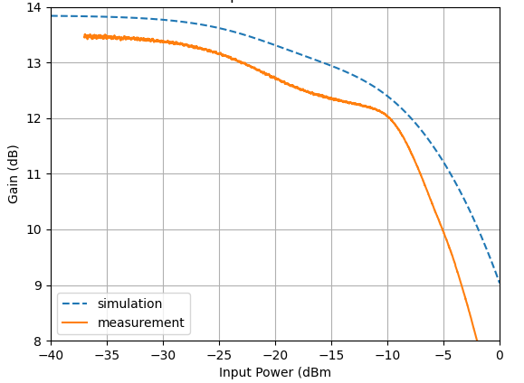
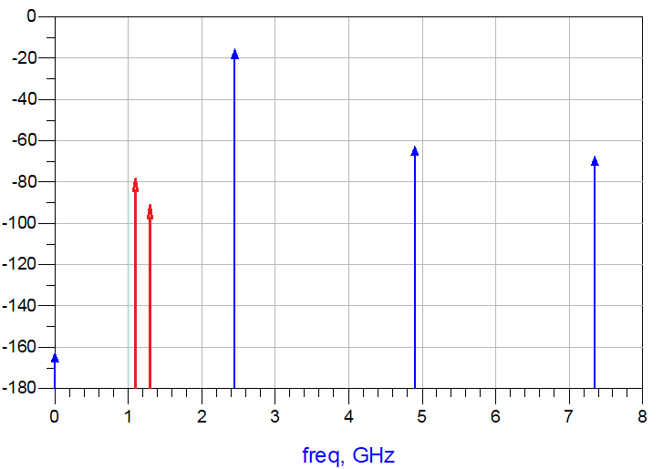

2.45 GHz low-noise amplifier on FR4
I designed a single-stage SiGe low-noise amplifier for the 2.4 GHz ISM band and took it from bias-point selection through EM co-simulation to a measured board.
- Context
- Project High-Frequency Amplifier Design, Ulm University, summer semester 2022
- Transistor
- Infineon BFR840L3RHESD SiGe:C HBT, fT ≈ 70 GHz
- Substrate
- 0.8 mm FR4 (εr ≈ 4.5), grounded coplanar waveguide
- Tools
- Keysight ADS for circuit and EM co-simulation, KiCad for layout
- Result
- S21 above 12 dB over 700 MHz, IP1dB of −15 dBm

Specification and results
The brief was a 2.4 to 2.5 GHz LNA built around a given transistor, designed through bias, stabilization, matching, layout and EM simulation, then fabricated and measured against the specification.
| Parameter | Target | Achieved |
|---|---|---|
| Gain S21 | > 10 dB | > 12 dB over 700 MHz (measured) |
| Match S11, S22 | < −10 dB | < −10 dB over 500 MHz at the input and 600 MHz at the output (measured) |
| Noise figure | < 2 dB | About 1.3 dB at 2.45 GHz (simulated) |
| IP1dB | > −20 dBm | −15 dBm (measured) |
Design
-
Bias point
A base-voltage sweep placed the noise optimum, NFmin = 0.75 dB, at VB ≈ 0.8 V. Varying VCE between 1.2 V and 3.6 V barely moved NFmin or the maximum available gain, so I set VCE to 1.8 V.
-
Stabilization
With fT around 70 GHz, the bare device was potentially unstable (K < 1) from 33 MHz to 9 GHz, so I analyzed stability far beyond the operating band. A series RC of 27 Ω and 220 pF from collector to ground brought K above 1 across the whole range.
-
Noise and gain matching
With the stabilization network in place, the device offers NFmin = 1.2 dB and 16.5 dB maximum available gain at 2.45 GHz. Since Γopt and the conjugate match do not coincide, I placed the input termination as a compromise using noise and gain circles. The bias feeds are merged into the matching networks, and each supply is decoupled by four parallel capacitors from 2.2 pF to 2.2 µF for a low-impedance RF ground over a wide band.
-
Layout and EM co-simulation
I laid out the board in KiCad with grounded coplanar waveguide lines and via fences, then imported it into ADS. There, the EM-simulated interconnects were co-simulated with the vendor models of the transistor and the Murata capacitors.
-
Fabrication and measurement
After assembly I measured the small-signal S-parameters and a power sweep of S21 and compared both with the co-simulation.





Measurement
Measurement and co-simulation agree closely. The input and output matches are centered slightly below the design frequency, and the measured gain sits about 0.4 dB under the prediction while staying above 12 dB across 700 MHz. In the plots, dashed curves are simulation and solid curves are measurement.


In the power sweep, gain compresses in the same way as the simulation predicts, only slightly earlier. The input-referred 1 dB compression point is −15 dBm, 5 dB above the specification.

Open issue: spurious tones
The output spectrum also showed spurs at 1.1 GHz and 1.35 GHz, together with steps in the DC collector current as the input power changed. Both are typical signs of oscillation. Yet neither the simulation nor the measured S-parameters indicate instability: K stays at or above 1.15, with its minimum at 13.5 GHz, and μ and μ′ remain above 1 throughout.
Refining the EM mesh and extending the simulated frequency range did not reproduce the tones, so their root cause is still open. The amplifier meets its specification, and the spurs are a reminder that small-signal stability criteria do not capture every way a real board can misbehave.

Takeaways
- The complete RF design cycle on one board: bias, stability, noise and gain matching, layout, EM co-simulation and measurement.
- The input network is a deliberate compromise between noise figure and gain.
- Co-simulating the EM-extracted layout with vendor models brought simulation and measurement within about half a decibel.
- Small-signal stability criteria are necessary but not sufficient. The bench has the final word.